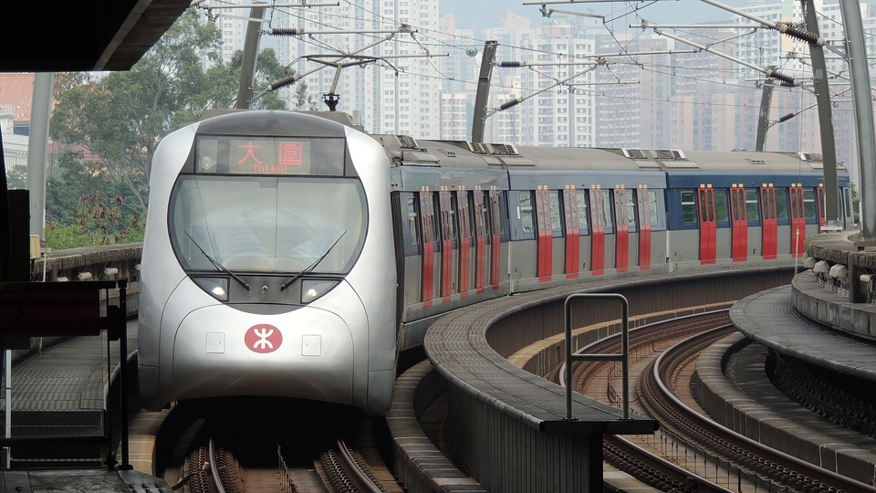

Light Rail has been called the silver bullet for congestion, and although that may be a bit of a exaggeration, it's rooted in fact!
Light rail is cheap, costing only $100 million per km while metro's can cost as much as $500 million per km.
It also helps to knit communities together in a way that no other transport form can.
Just look at how the harbourfront LRT line has connected the community, transformed the streetscape and encouraged people to get out and do something.
Light rail is also much cheaper to maintain, and because everything's "lighter," it provides for a smoother ride.
It's also very versatile, meaning that the tracks can be laid and removed with relative ease.
Being at the surface also has the benefit of not needing to build or travel through huge underground stations, not to mention the amazing view.
It delivers enough capacity for most routes with a crush load of 5000 passengers per hour.
It's perfect for communities with mid-rises that have relatively high transit ridership, but it's also a great way to grow transit ridership.
The reason for that is the LRT is there; it's visible and it attracts you!
Sometimes though, light rail just won't cut it.
This happens on routes lined with high rises or routes that have many bus feeders.
In these cases, we will need something with a higher capacity - heavy rail.
This can take the form of an APM or Metro.
Its much more expensive, but it can carry up to 30,000 passengers per hour.
Unfourtantley, many metro projects have been used as "pet projects" by selfish politicians.
The Sheppard Subway and Fulton Center Station(New York City) are such examples where large amounts of money were spent for very little gain.


Complete streets are streets designed for everyone. We need to redesign streets so that they aren't *just* for cars, but we also need to make sure that cars can still use them. As we densify communities, car ownership will naturally drop, and more people will use alternate methods to get around. This drop will be enough to trigger a redesign of collector roads which will have widened sidewalks and a new bike lane while retaining one lane of car traffic. Transit would likely run down the median, with stops located at intersections. A good example of a complete street in Toronto is Queens Quay. It has a wide pedestrian promenade with one lane of car traffic, a bike path and an LRT running down the center. This model also many creates community spaces and gathering places.
Of course, this isn't realistic everywhere. I'm talking mostly about the semi-dense, midtown communities such as Parkdale, Leaside or East York. These communities are a mix of single houses and mid rises; by replacing the single houses with mid - high rises, we can create the perfect conditions for these streets. Other areas like Rouge Park or Brampton would continue to mostly rely on cars but would have central arteries that could be considered complete streets. An example is Hwy 7, which has relatively high-density communities surrounding it but besides that, is located in a very low density area. It has rapid transit, bike lanes and wide sidewalks which can't be found anywhere else in the region.
Hong Kong is considered to be a success story when it comes to transportation. They have a realtivley small city with a lot of people living in it, and as a result, it's extremely dense. The city has harnessed this to develop a transit network that has a 75% usage rate and a 99% punctuality rate, both of which are unheard of in the west. The city government has also built streets with wider sidewalks, gathering places and other features that foster a people centric culture Funding for all this comes from an ingenuis concept used by the Hong Kong MTR called Value Capital. How it works is when a rail line is built, the MTR signs agreements with local businesses, malls or residences to take part of their revenue. Sometimes, the MTR just buys the entire development! This makes them billions and billions of dollars every year, meaning that they're the only major transit system in the world to make money.
To learn more about some exciting transit projects happening in Ontario, visit the Metrolinx webpage.
Marcus Gee and the Globe and Mail have produced this funny yet brutally honest video about transit planning in Toronto. It's a bit old, but still worth a watch. You can view it on Youtube
Return to the top of the page
Return to the home page